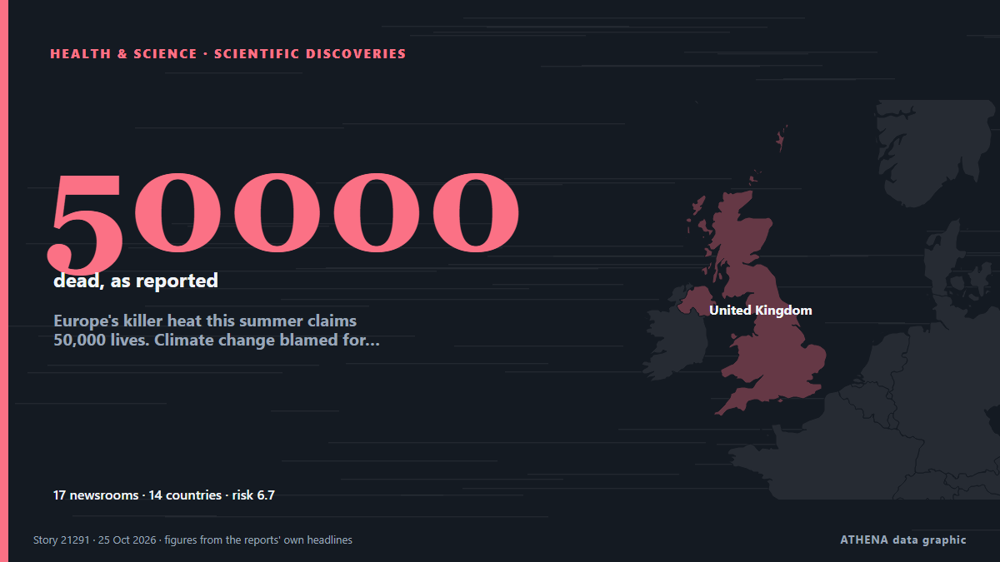

Europe's killer heat this summer claims 50,000 lives. Climate change blamed for two-thirds of deaths

Blistering record heat in Europe this summer helped kill more than 50,000 people, with nearly two-thirds of that death toll blamed on human-caused climate change, a new study found. из The Korea Times
Независимые источники: 17 изданий в 14 странах, с 22 окт.; первым сообщил Phys.org; освещение идёт на спад. ATHENA оценивает риск как высокий (6.7/10), прежде всего из-за тяжести описываемого ущерба и географического и отраслевого охвата. Уверенность — 87 % (высокая); подтверждают независимые источники: 17 изданий, средняя надёжность источников — 74 %. СМИ по странам: Великобритания (3), Бельгия (1), Ирландия (1). Освещение: с 22 окт. по 25 окт., 64 ч.
Почему это важно: События в здравоохранении и науке могут менять риски для общественного здоровья, приоритеты исследований и регулирование.
Что изменилось: 1 новое сообщение за 24 часа до 25 окт..
Первый заголовок: This summer’s heat was Europe’s deadliest on record, scientists say
Заголовки приводятся на английском языке, как они были опубликованы.
Коротко в цифрах
Отобрано, оценено и написано по опубликованной методологии ATHENA. Ни один редактор не вмешивается в отдельные события. Как это создаётся ›
| 22 Oct 19:20 UTC | 1 |
|---|---|
| 22 Oct 22:20 UTC | 4 |
| 23 Oct 01:20 UTC | 1 |
| 23 Oct 04:20 UTC | 3 |
| 23 Oct 07:20 UTC | 4 |
| 23 Oct 10:20 UTC | 2 |
| 23 Oct 13:20 UTC | 0 |
| 23 Oct 16:20 UTC | 0 |
| 23 Oct 19:20 UTC | 0 |
| 23 Oct 22:20 UTC | 0 |
| 24 Oct 01:20 UTC | 0 |
| 24 Oct 04:20 UTC | 1 |
| 24 Oct 07:20 UTC | 0 |
| 24 Oct 10:20 UTC | 0 |
| 24 Oct 13:20 UTC | 0 |
| 24 Oct 16:20 UTC | 0 |
| 24 Oct 19:20 UTC | 0 |
| 24 Oct 22:20 UTC | 0 |
| 25 Oct 01:20 UTC | 0 |
| 25 Oct 04:20 UTC | 0 |
| 25 Oct 07:20 UTC | 0 |
| 25 Oct 10:20 UTC | 1 |
| 23 Oct 06:40 UTC | 2.7 |
|---|---|
| 23 Oct 06:41 UTC | 6.6 |
| 25 Oct 11:36 UTC | 6.7 |
Откуда эти цифры
Значимость
Риск
Уверенность
Освещение — кто сообщил и когда
заголовок в оригинале · открывает источник- Phys.org · ВеликобританияWe must prepare entire cities for extreme heat. Our new study reveals how
- Politico Europe · БельгияThis summer’s heat was Europe’s deadliest on record, scientists say
- RTÉ News · ИрландияOver 50,000 heat deaths in European cities this summer
- The Independent · ВеликобританияEurope suffers deadliest summer on record with over 50,000 deaths linked to extreme weather
- The Straits Times · СингапурSummer heat’s toll on Europe: 50,000 deaths and a $24.3b GDP hit
- Guardian Environment · ВеликобританияHeat killed ‘staggering’ 50,000 people in Europe’s cities this summer, scientists warn
- The National · ОАЭEurope's summer heatwaves 'caused 50,000 excess deaths'
- Indian Express · ИндияFor Europe, a summer of record heat and 50,000 estimated deaths
- The Korea Times · Республика КореяEurope's killer heat this summer claims 50,000 lives. Climate change blamed for two-thirds of deaths
- NEWS.am (English) · АрменияMore than 50,000 people died in Europe due to extreme heat this summer, researchers find
- AzerNews · АзербайджанHeatwaves in Europe kill at least 50,000 people in summer 2026
- NPR · Соединенные ШтатыEurope's heat claims 50,000 lives. Climate change blamed for two-thirds of deaths
- ProtoThema English ·Europe’s deadliest summer in decades: More than 50,000 heat-related deaths in 2026, new analysis finds
- Türkiye Today · ТурцияEurope records deadliest heat season in 26 years
- CBC News · КанадаEurope's killer heat this summer claims record 50,000 lives, study suggests
- Mainichi (English) · ЯпонияEurope's killer heat this summer claims 50,000 lives. Climate change blamed for two-thirds of deaths
- The Jerusalem Post · ИзраильOver 50,000 killed in Europe over summer due to worst heat wave on record